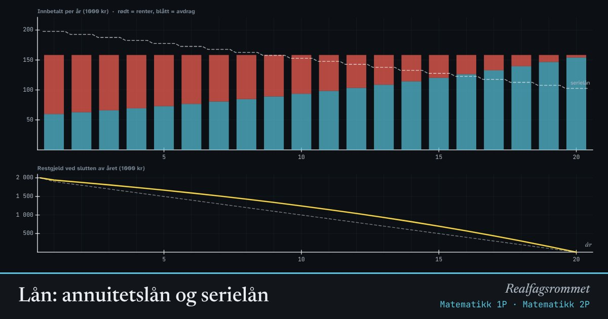

Lån: annuitetslån og serielån
Når du betaler ned et lån, består hver innbetaling av renter og avdrag. I et annuitetslån er innbetalingen lik hver gang. I et serielån er avdraget likt, så innbetalingene blir mindre etter hvert.
Start animasjonen
Formler
Om animasjonen
er lånebeløpet, er renten per termin og er antall terminer. Med 5 % rente per år og månedlige terminer er .
Rentene regnes alltid av det du skylder akkurat da, restgjelden. I begynnelsen er restgjelden stor, så rentene er store.
I et annuitetslån er terminbeløpet likt hele tiden. Først går nesten alt til renter, og avdragene vokser etter hvert. I et serielån er avdragene like, og terminbeløpet synker.
Serielånet gir lavere renter totalt fordi gjelden går raskere ned i starten. Til gjengjeld er det tyngre å betjene de første årene.
Prøv dette
- Hvor mye betaler du i renter totalt for et annuitetslån på 2 millioner over 20 år med 5 % rente? Sammenlign med serielån.
- Hvor mye sparer du i renter ved å betale ned over 15 år i stedet for 25 år?
- Hvorfor er det mest renter i begynnelsen av et annuitetslån?
- Hva skjer med det månedlige beløpet om renten går fra 3 % til 6 %?
Kompetansemål
- Matematikk 1P: Økonomi: sparing, lån og renter
- Matematikk 2P: Lån og personlig økonomi